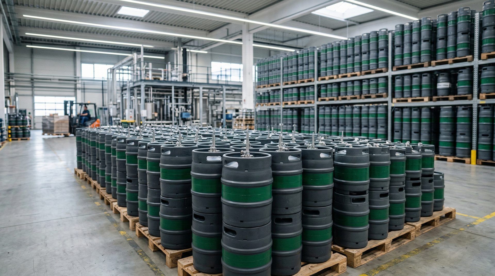
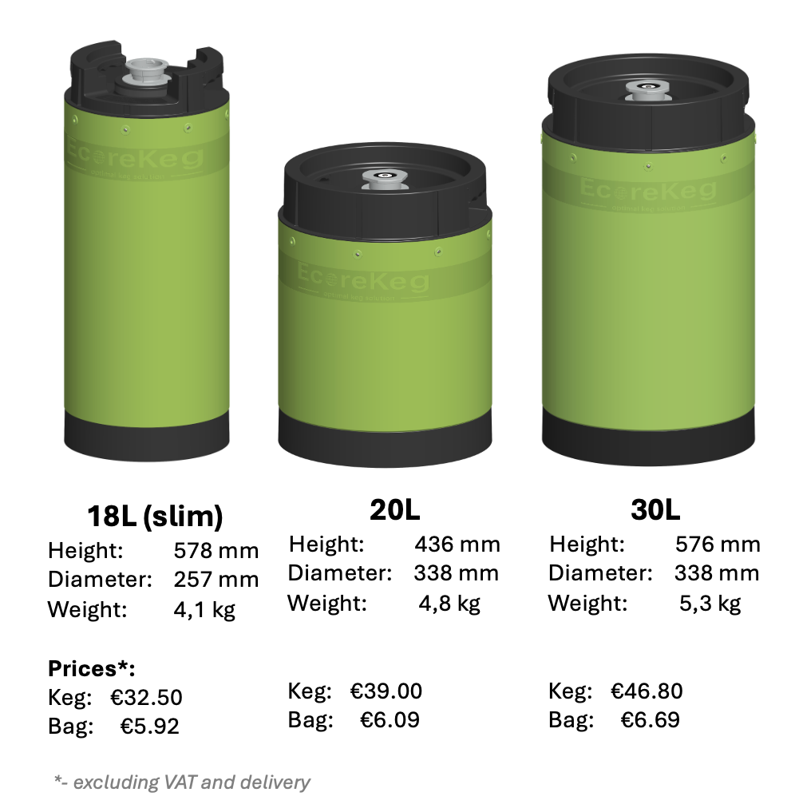
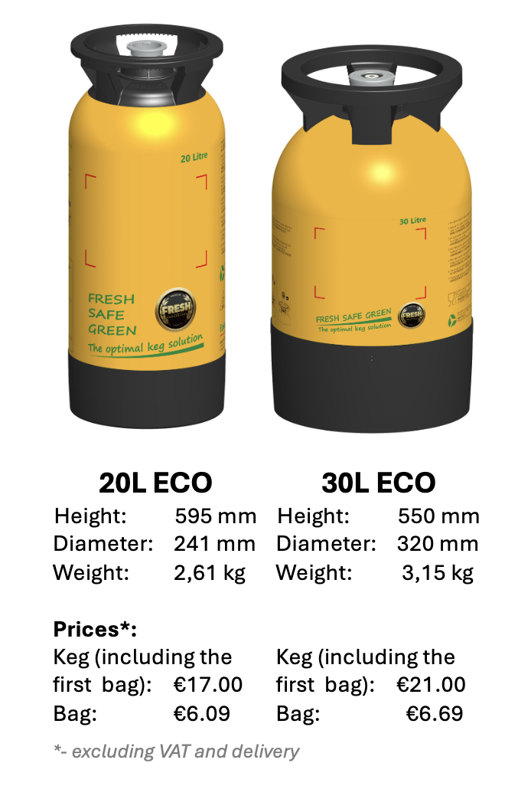
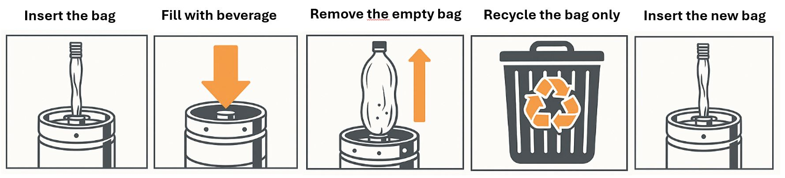

Reusable Kegs for Breweries
Lightweight. Sustainable. Cost-Efficient. Our beverage-in-the-bag technology eliminates keg cleaning while preserving original flavor.
Built for Modern Breweries
Our reusable keg system reduces costs, eliminates cleaning, and supports sustainable operations.
No Cleaning Required
Replaceable inner bags are pre-sterilized and flushed with 99.99% CO2. Simply swap the bag and fill — no chemicals, no water waste.
12-Month Shelf Life
Inner bags provide up to 12 months of shelf life. Pressure medium never contacts the beverage, ensuring freshness is maintained.
100% Recyclable
Fully compliant with EU Directive 94/62/EC. Reduced chemical and water usage supports your brewery's sustainability goals.
Up to 150 Cycles
PRO Series kegs can be reused for 150–200 fillings, making them the most cost-efficient solution for long-term operations.
Compatible Fittings
Available with S type (European Sankey), A type (German Slider), and G type couplers. Works with your existing filling lines.
Flavor Preserved
Pressure medium never touches the beverage, preserving the original flavor. You can even use compressed air instead of CO2.
Two Series, Every Brewery Need
Choose between maximum durability with our PRO Series or a cost-effective entry point with our ECO Series.

PRO Series
Durable kegs built for maximum reuse. The most cost-efficient solution over time, designed for breweries that demand reliability.
| Reusable | Up to 150 cycles |
| Sizes | 18L (slim), 20L, 30L |
| Coupler Types | S, A, G type |
| Max Pressure | 20 bar |
| Dispensing Pressure | 3.5 bar |
| Shelf Life | Up to 12 months |
| Environment | 100% recyclable, EU 94/62/EC |
| Approvals | EU (10/2011), FDA (cfr 175.300) |

ECO Series
A lighter, lower-cost alternative. Ideal for a smaller upfront investment or as a step away from single-use kegs.
| Reusable | Up to 10 cycles |
| Sizes | 20L, 30L |
| Coupler Types | S, A type |
| Max Pressure | 15 bar |
| Dispensing Pressure | 3.5 bar |
| Shelf Life | Up to 12 months |
| Environment | 100% recyclable, EU 94/62/EC |
| Approvals | EU (10/2011), FDA (cfr 175.300) |
Three Simple Steps
Our beverage-in-the-bag system makes keg operations faster and simpler than ever.
Remove Used Bag
Depressurize the keg and remove the used inner bag. No cleaning or disinfection needed.
Insert New Bag
Place a pre-sterilized, CO2-flushed replacement bag into the keg. Ready in seconds.
Fill & Dispense
Fill the beverage directly into the bag. Compatible with manual, semi-automatic, and fully automatic filling.

Frequently Asked Questions
Everything you need to know about GPROKEG kegs and their operation.
Contact Us
Ready to simplify your keg operations? Reach out and we'll find the right solution for your brewery.
Company Details
GPROKEG EUROPE OÜPollaku, 66632, Kärgula
Võru county, Estonia, EU
Registration
Trade Register: 14778192
VAT I.D.: EE102179923
Contact Emails
- General: info@gprokeg.eu
- Sales: ott@gprokeg.eu
- Product & Cooperation: rain@gprokeg.eu
- Operations & Finance: lauri@gprokeg.eu